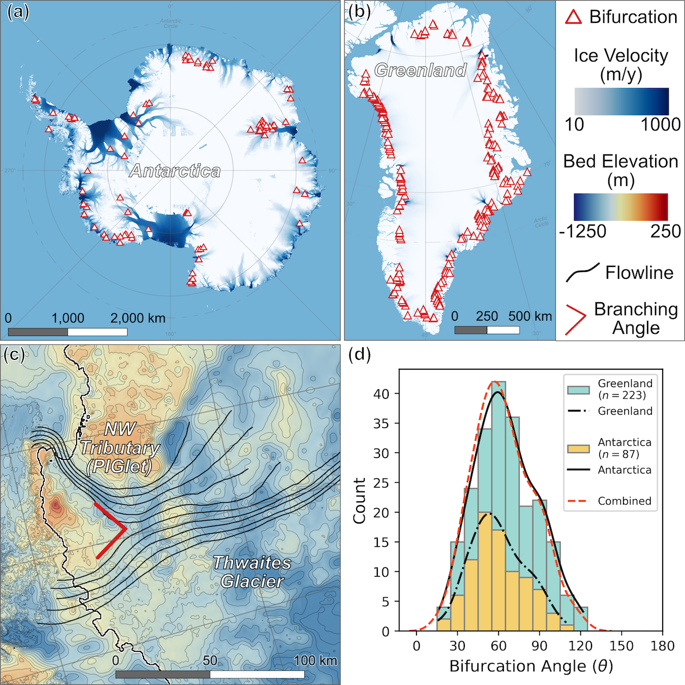
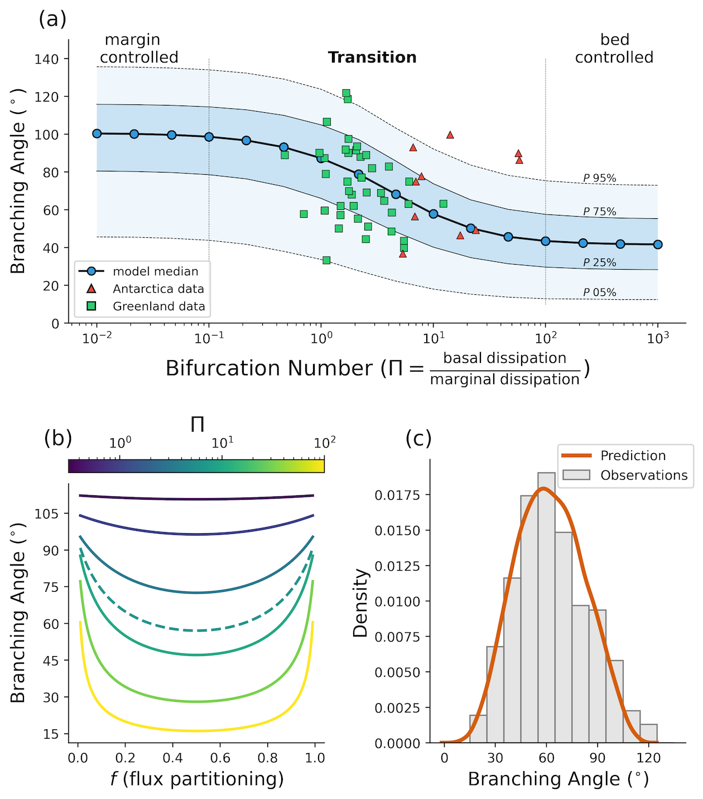
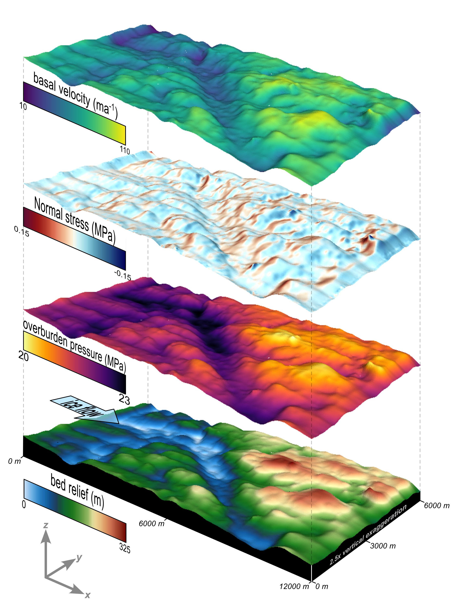
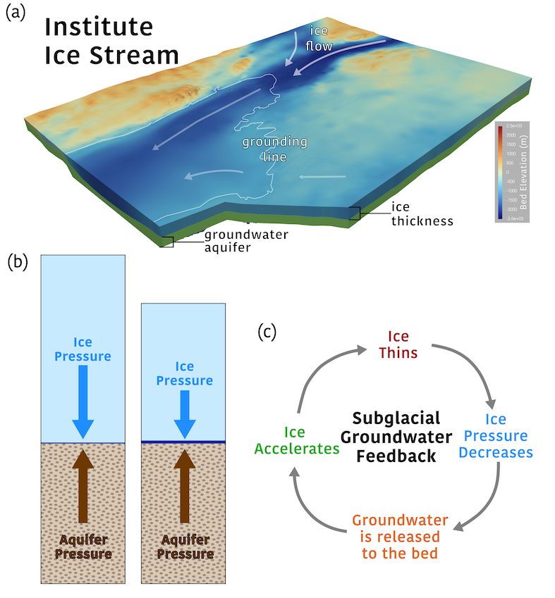

When we think of glaciers in Antarctica and Greenland, we often picture massive, slow-moving corridors of ice, but in many ways, they behave like rivers. Across Antarctica and Greenland, large glaciers frequently split into two separate paths. These junctions are battlegrounds where each branch competes for ice. Despite their role in routing billions of tons of ice to the ocean, these bifurcations have never been systematically studied. My current focus sets out to answer a fundamental question: are branching angles forced by the shape of the bedrock below, or is the ice creating its own path?

By analyzing satellite imagery, I discovered a pattern: glaciers in both Greenland and Antarctica consistently branch at angles right around 60 degrees. To understand why, I developed a simplified model to look at the physics of branching geometry. With this model, you can think of branching as tug-of-war between the three pathways, where friction at the bed and resistance in the glacier margins controls how hard each path pulls. The model shows that these competing forces naturally balance out to favor that 60-degree angle, meaning that ice dynamics could actively shape how glaciers divide.

This could change how we look at vulnerable regions, like West Antarctica. Because many of these massive ice streams flow over relatively flat, low-relief topography, they aren't securely locked in place. Instead, their routes are sensitive to subtle changes in ice thickness, internal strength, and how slippery the bed is underneath them. As the climate warms, even minor shifts in these factors could cause entire glacier networks to reroute their flow, fundamentally altering how quickly ice drains into the sea.
Continental-scale ice sheet models rely heavily on satellite-derived subglacial topography. While these synthetic bed maps are invaluable, it remains unclear how much their smoothed representations alter model predictions.

To investigate this, Robert Law (University of Sheffield) and I are utilizing 25-meter resolution bed data for Thwaites Glacier to examine how high-relief features, like the small hills and valleys missing from satellite products, influence ice dynamics. Specifically, we are looking at how these localized bed "bumps" induce complex flow patterns and trigger the development of temperate ice (ice at its melting point).
As ice forces its way over a bedrock obstruction, the immense localized pressure generates heat. Our results show that this process can develop pockets of temperate ice behind the bed bumps. Because warm, temperate ice deforms much more readily than cold ice, these microscopic thermal changes have macroscopic impacts on glacier speed. Ultimately, accounting for high-relief topography becomes increasingly critical as ice velocity accelerates.
A manuscript of this work is in preparation and will be submitted to JGR: Earth Surface in 2026.
Did you know that groundwater exists beneath the Antarctic Ice Sheet?
As glaciers flow toward the sea, heat from friction and ice deformation produces meltwater at the glacier bed. This water lubricates the base of the glacier, helping the ice flow faster. However, some of this water is forced into layers of sediment and porous rock hundreds of metres below the ice, forming subglacial groundwater aquifers. This groundwater could play an important role in controlling how quickly glaciers will flow in the future.

The weight of the ice above and the pressure from the groundwater below exist in a delicate balance. When an ice sheet thickens, its increasing weight forces water deeper into the underlying aquifer, raising the pressure of the aquifer. But when the ice thins, that highly pressurised groundwater tries to escape back to the base of the ice sheet.
This creates an important feedback: thinning ice releases groundwater, the groundwater lubricates the bed, the ice flows faster, and the faster flow causes further ice thinning. Understanding whether this process could accelerate future ice loss is an emerging question in glaciology.
I am incorporating a newly-developed groundwater component into Elmer/Ice, a 3D ice sheet model. This work contributes to a NERC-funded project investigating the role of groundwater beneath the Antarctic Ice Sheet. Using newly acquired geological data, the project will explore how groundwater flow could influence ice loss from Institute Ice Stream in West Antarctica, one of the largest glaciers on Earth.
I am currently constructing the model framework to prepare for simulations with new observations. New data will become available after the 2026-27 and 2027-28 Antarctic field seasons. I will be part of the Antarctic field team during the 2027-28 season. The results from this work will become the first 3D investigation of how groundwater will influence the future of Institute Ice Stream and the West Antarctic Ice Sheet.
If you're interested in learning more about subglacial groundwater in Antarctica, I recommend reading the following journal articles: